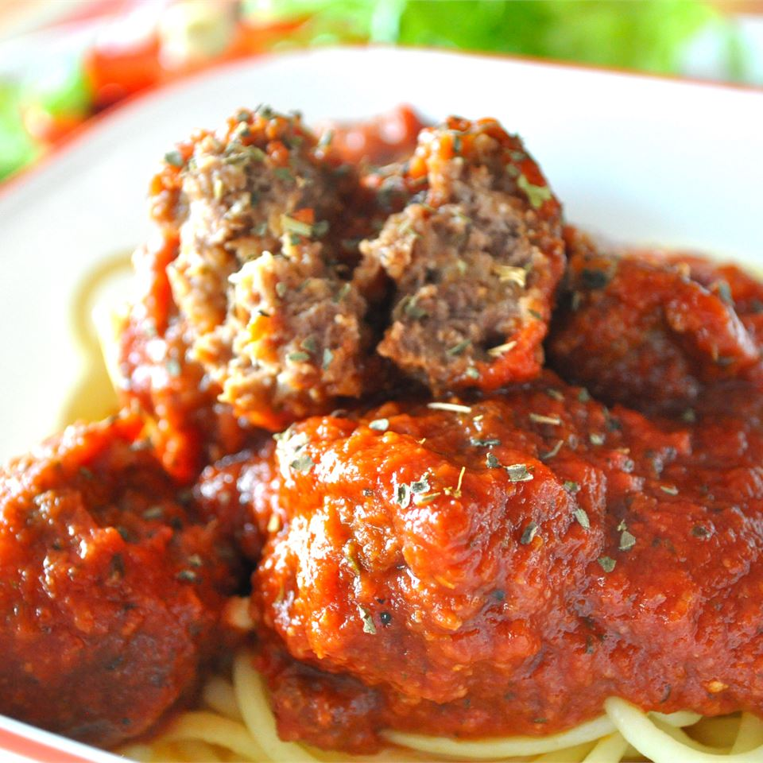

Meatballs

This is a combination of all the popular meatballs recipes found in Allrecipes.
Let's achieve meatball Nirvana with this wonderful recipe!
Don't forget to cover them with your favorite sauce and pasta!
Ingredients:
- 1 pound extra lean ground beef
-
1/2 teaspoon sea salt
-
1 small onion, diced
-
1/2 teaspoon garlic salt
-
1 and half teaspoons Italian seasoning
-
3/4 teaspoon dried oregano
-
3/4 teaspoon crushed red pepper flakes
-
1 dash hot pepper sauce (such as Frank's RedHot®), or to taste
-
1 and half tablespoons Worcestershire sauce
-
⅓ cup skim milk
-
1/4 cup grated Parmesan cheese
-
1/2 cup seasoned bread crumbs
Steps:
-
Preheat an oven to 400 degrees F (200 degrees C).
-
Place the beef into a bowl and season with ingredients except milk cheese and
bread crumbs.
-
Add milk,cheese and bread crumbs.
-
Mix until blended and then form meatballs.
-
Place meatballs into a baking sheet and bake for 20 to 25 minutes.